学 C 语言的人大多写过这一行：char *strcat(char *dest, const char *src);它把 src 追加到 dest 的末尾，两条字符串就此接成更长的一条。软件工程学院讲「软工定义世界」——一代代新青年在前人打下的基础上不断进取、敢于创新，一步步拓展着世界的边界。世界是智能的，世界是美丽的，未来世界的每一种样貌，都能由软工的师生亲手定义。
于是 str 与 cat 接在一起：字符加猫猫。STRCAT 的主体，就是从这一行代码里长出来的。
char *strcat(char *dest, const char *src);
If you have learnt C, this line is probably familiar: strcat appends one string to another, and two strings become a longer one. The School of Software Engineering says that software defines the world — each generation pushes the boundary further. Every possible shape of the future can be written by the people here.
So str meets cat, a string plus a cat, and the body of STRCAT grew out of that single line.
本体是一枚悬浮的椭球体星球，三条环带绕着它转；耳朵取勒洛四面体的轮廓，靠磁吸挂在星球两侧，可以取下，也可以换色；最外一圈星环由字符串组成，写什么都行。三件合起来，是一只能在银河里自在长大的猫。
The body is a levitating ellipsoid planet circled by three bands. The ears follow the outline of a Reuleaux tetrahedron and are held by magnets, so they come off and change colour at will. The outermost ring is a string you can rewrite. Together they make a cat that grows up freely in the galaxy.
受蒙德里安《红、黄、蓝的构成》启发，取红、黄、蓝作主题色，参数做过微调。这组色序也正好是海上日出的抽象——天气好的清晨，在唐家湾沙滩就能见到同一套颜色。
Inspired by Composition in Red, Blue and Yellow by Piet Mondrian, red, yellow and blue make up the theme colors, with slight adjustments — the same sequence as a sunrise over the sea, the one you can see on Tangjiawan beach on a clear morning.
茫茫大海上初生的朝阳，是软工学子身上的鲜活动力
奔赴热爱、认真过日子的底色
面朝大海、春暖花开的未知广域，也是蛟龙潜渊的无限探索
猫对世界始终保有好奇：没走过的路先伸爪探一探，跌下来就翻个身接着走，从不因为世界太大而收起兴致。STRCAT 留着这份性情，也是我们对软工人的期待——愿你在代码里和日子里都像这只小猫，乐观、积极、敢试错，面对多彩的世界不退后半步。
世界不是一件完工的作品，而是一块随时可以重写的画布。每一位软工人都是自己的 strcat：把新的字符串追加到世界的末尾，多一种写法，世界就多一种可能。
Cats keep their curiosity: they test an unknown path with a paw, roll over and walk on after a fall, and never lose interest because the world is too big. STRCAT keeps that temperament, and it carries our wish for every software engineer — stay optimistic, stay willing to try and fail, and never step back from a world this colourful.
The world is not a finished work but a canvas that can be rewritten. Everyone here is a strcat of their own: append a new string to the end of the world, and it gains one more possibility.
百事从欢，焕新百事Embrace the world to make it embroidered.
衍生 MERCHANDISE
STRCAT还为您带来了很多衍生文创作品
包括票根、条幅、明信片、鼠标样式等
请君过目
To make the design less plain,
a series of merchandises,
including tickets, banners, postcards, mouse styles and the like,
is additionally prepared for exhibition.
六枚票根共用一套纵向栅格：红黄蓝切分条面，白色细线隔开信息段，虚线以下是留存联。滚轮往下，纸条横向走位，正中的一枚放大。
Six tickets share one vertical grid: red, yellow and blue divide the strip, hairline rules separate the blocks, and the dashed line marks the stub. Scroll down to bring each one to the centre.
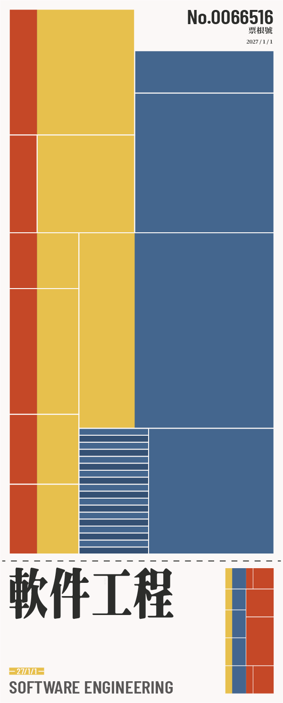
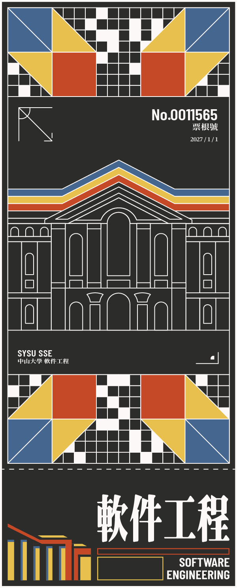
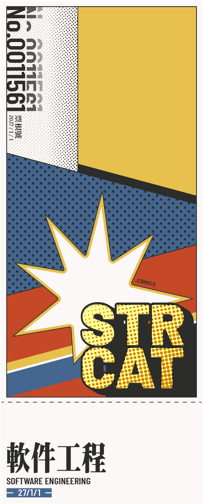
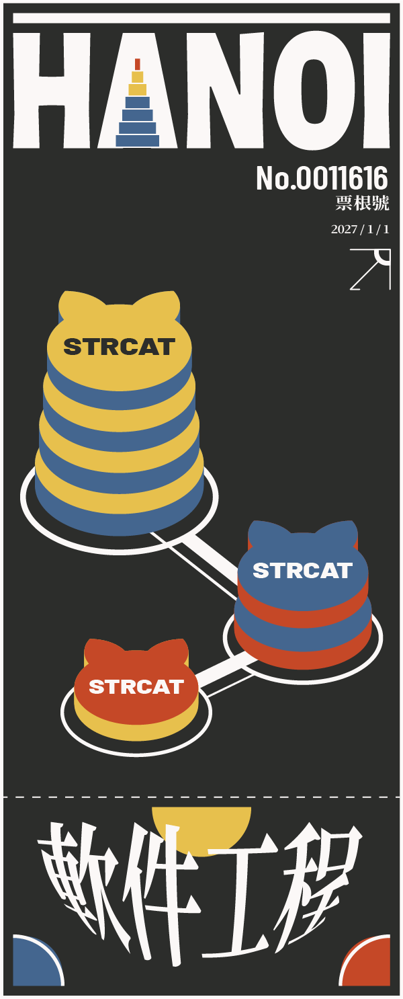
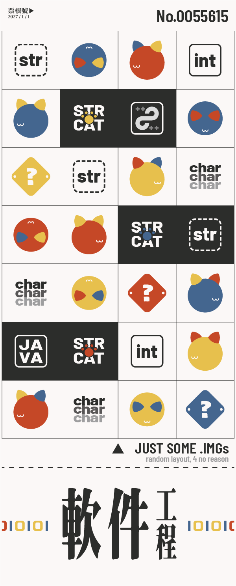
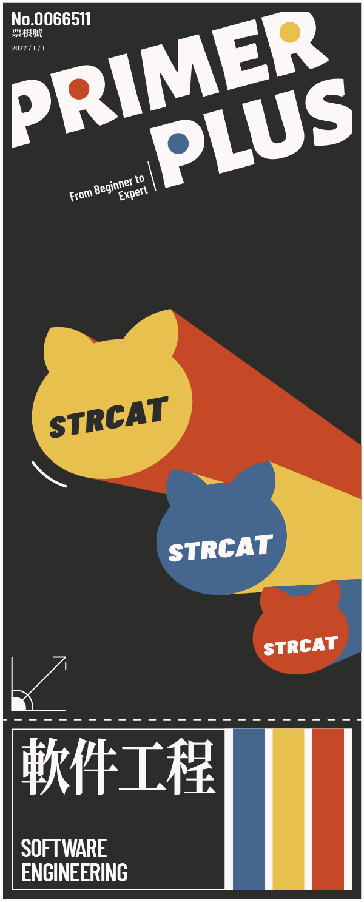
四张大色块明信片：蓝色球体、黄色勒洛三角、红色切角，配英文标版与中文刊头。横竖比例照原稿保留，不裁齐。
Four postcards keep the large colour fields of the artwork: a blue sphere, a yellow Reuleaux triangle, a red cut corner, set with the English wordmark and the Chinese masthead. Each keeps its own aspect ratio, uncropped.
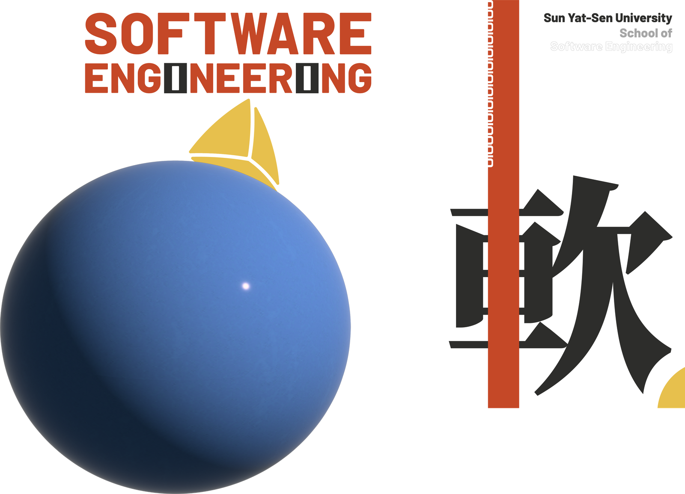
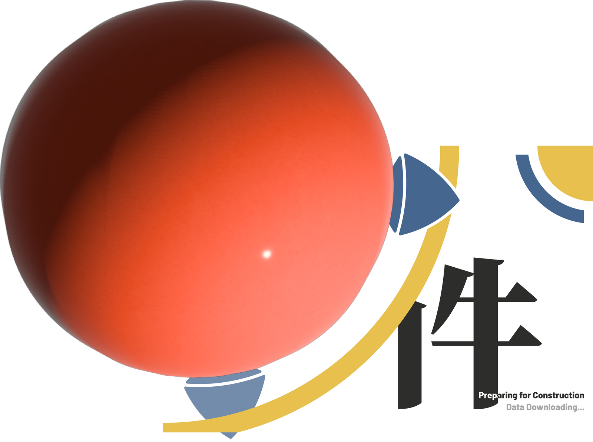
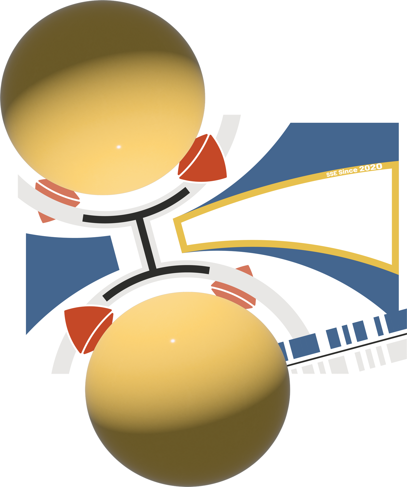
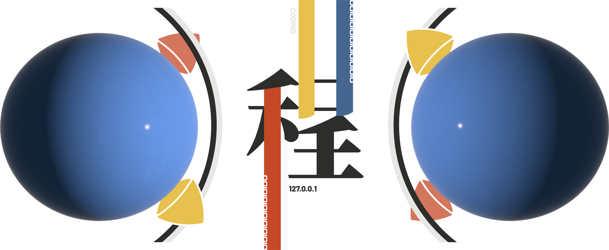
三张长幅统一取 2:1，宽度收在正文栏内，自上而下叠放。黑底噪点、水墨山形、包豪斯网格三种语气，主题句落在右下。
Three banners keep a 2:1 ratio and sit within the text column, stacked from top to bottom: a grainy black field, an ink landscape and a Bauhaus grid, each with the headline set to the lower right.
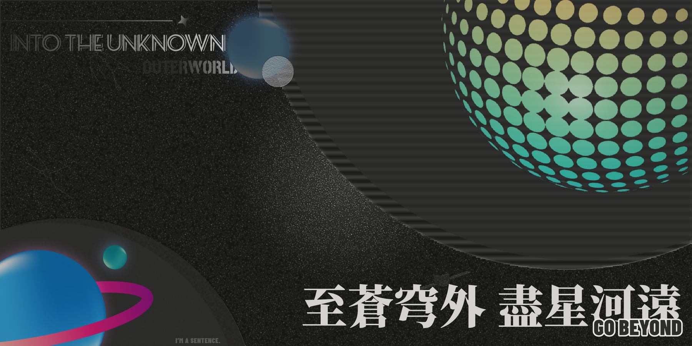
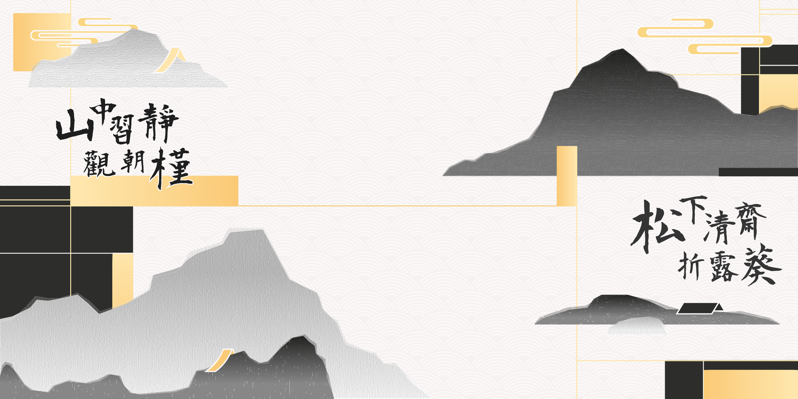
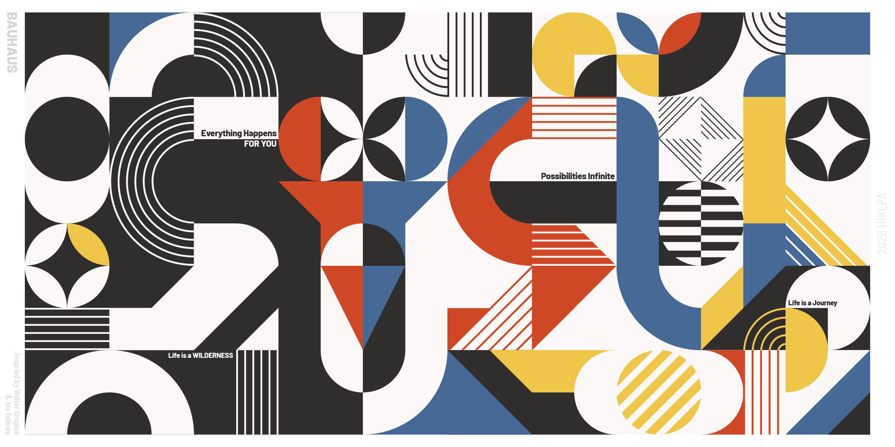
STRCAT立志成为所有人的虚拟伙伴，故不影响整体形象的编辑权将开放给众多用户。这样，你也能创建属于你自己的cat，并有机会加入到多元STRCAT的宇宙中。
STRCAT is primarily designed for all individuals as a virtual partner. Thus, part of the editing permission, which affects little of the overall effect, is deliberately opened to most users. This enables you to create your own distinguishing cat and renders you a chance to get involved in the universe of diverse customized STRCATs.
点击下方按钮即可定制包括形态、色彩、表情、字符在内的元素。
Click the button below to adjust the form, color, emotion, string content and so on.
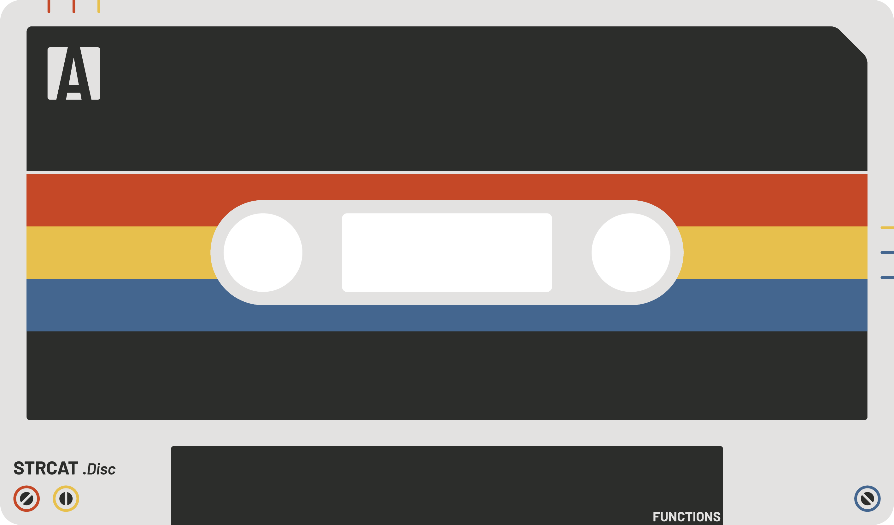
请导入.mp3文件